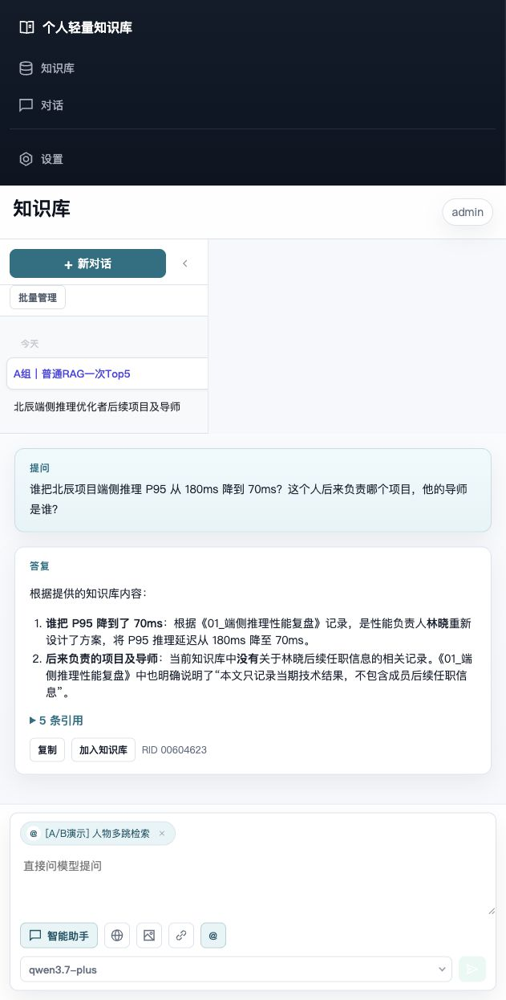
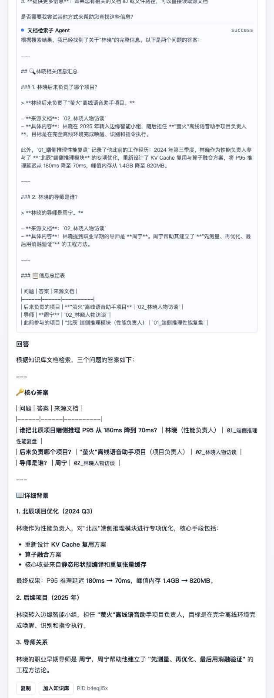
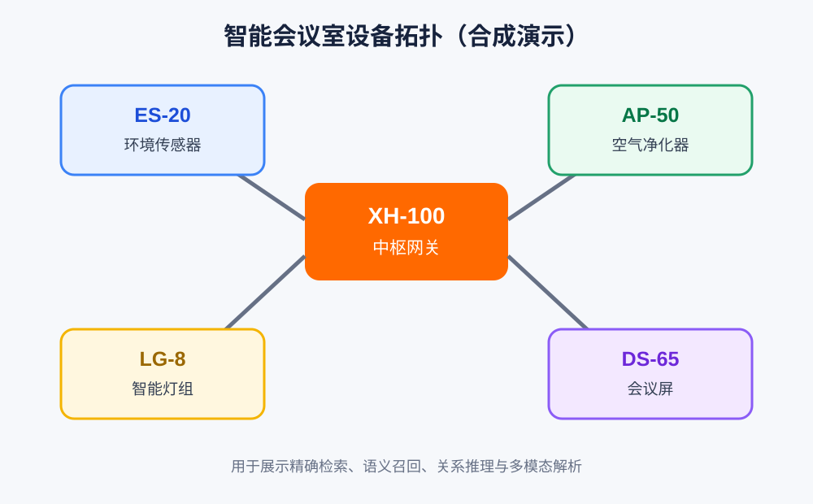

01 · Project Overview
Django-Agent
一个从多格式知识入库到Agent 动态取证的轻量知识工作台
高骏杰 · 小米训练营项目介绍
02 · Architecture
整体架构由两条链组成：离线构建知识，在线组织证据
存储层：SQLite / FTS5 / sqlite-vec
模型层：阿里云百炼兼容接口
03 · ReAct Implementation
ReAct 循环：工具结果回填后，模型继续决策
模型读取问题、历史和工具 Schema，决定直接回答还是返回 tool_calls
ToolRegistry 校验工具名与参数，执行检索、图谱或子 Agent
执行结果以 role=tool 回填上下文，成为下一轮的新证据
04 · Agent Orchestration
主 Agent 负责拆任务，子 Agent 用受限工具完成专业检索
主 Agent
调用大模型判断任务类型；仅开放 actor 与 thinking
专业子 Agent
新的 AgentEngine + 专业 Prompt + 独立上下文 + 工具白名单
主 Agent 综合
继续调度、补证，或生成带来源的最终答案
文档检索 Agent
knowledge_search / grep_chunks / list_docs / document_info
Wiki 研究 Agent
wiki_search / read_page / list_pages / read_source
图谱推理 Agent
query_knowledge_graph + Wiki 与文档补证
答案整理 Agent
只开放 thinking，不允许继续检索或创建子 Agent
05 · Feature 1 / Evidence
动态第二跳补齐了固定 Top-5 缺失的人物证据
A · 一次固定 Top-5
1 / 3
得到新实体
林晓
再次检索
B · Agent 动态补证
3 / 3
06 · Feature 2 / Retrieval
稀疏与稠密负责“多找”，Rerank 负责“排对”
FTS5 稀疏召回
找“相同的词”：错误码、人名、项目名和设备型号
Embedding 稠密召回
找“相同的意思”：连不上服务器 ≈ 无法连接云端
10道合成演示题 · 检索消融
07 · Feature 3 / Ingestion
OCR + Caption：让图片也能被检索

实际演示语料：SVG拓扑图（设备名称与参数均为合成数据）
按文件格式抽取图片
PDF页面与内嵌图、DOCX关系资源、PPTX Picture Shape、Markdown URL或Data URI
统一视觉预处理
尺寸校验、EXIF纠正、最大边2048、统一JPEG；SVG先栅格化
生成两个独立证据块
OCR：图片写了什么 Caption：对象、结构与关系是什么
08 · Engineering + Conclusion
特色能力必须有控制、评测和降级，才能形成工程闭环
已经实现
- ReAct最大轮数、重复检测、工具错误降级
- 主/子Agent工具白名单与禁止递归调用
- 上下文50%摘要、80%滑动窗口
- SSE offset回放与文档任务启动恢复
当前边界
- 完整流水线平均约11.5秒
- 事件流仍是单进程内存实现
- 混合分数下一步改用RRF
- n=10只验证机制，不代表生产准确率
动态多跳解决“找不全”
混合召回解决“找不准”
多模态入库解决“图片不可检索”
项目的独特性不是堆叠组件，而是把三种能力接入同一条可观察、可评测的证据链。
Appendix A
三个检索指标分别回答：找到了吗、找全了吗、排得靠前吗
Hit@K
只回答“有没有”。正确资料排第1和第5都算命中。
Recall@K
回答“有没有找全”。需要2份证据，只找到1份就是50%。
MRR
回答“第一条正确资料靠不靠前”。第1名=1，第5名=0.2。
Appendix B
Agent 是受约束的决策循环，不是无限自主执行
我不会夸大的地方
- 不是全工具通用重试：当前主要覆盖模型瞬态错误。
- 去重作用域：当前是单次 Agent Run 的进程内缓存。
- SSE恢复作用域：单进程、内存、约1小时TTL。
Appendix C
下一步优先优化“检索决策与评测”，而不是先换更大的模型
RRF融合
替代BM25与向量原始分数相加，建立稳定的跨通道排序。
按意图触发
只有关系型问题启用GraphRAG，召回不足时才做查询扩展。
扩展标注集
100+问题，加入负例、无答案、多跳和困难样本，报告P95与成本。
生产化迁移
Redis Streams + Celery + PostgreSQL/独立向量库，多Worker恢复。